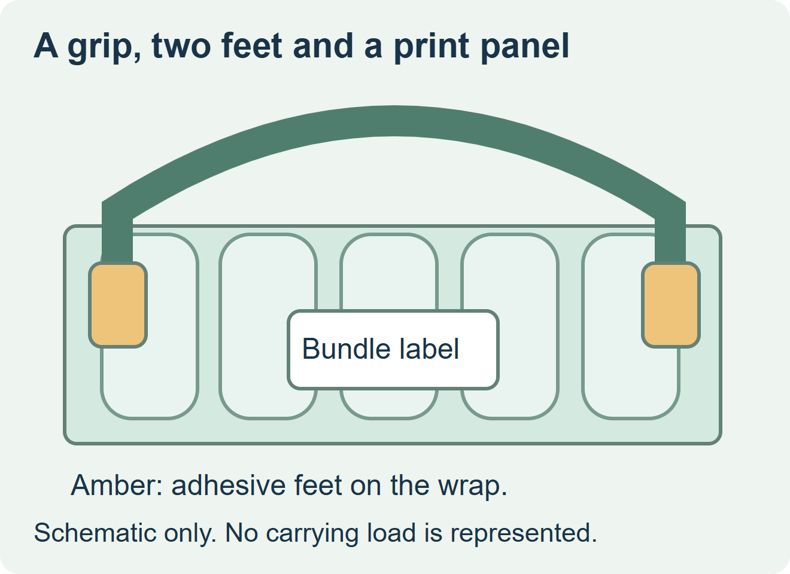
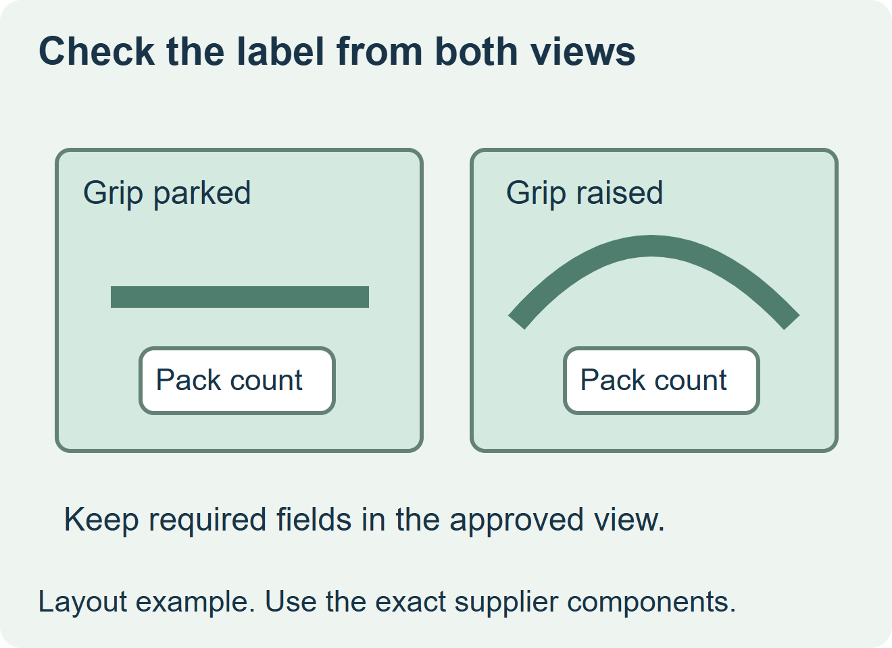

Use the handle for fixed branding when the handle supplier offers a supported print zone and the artwork can move with the grip. Put fields that must be visible in a consistent position, or that change by SKU or shipment, on a separate supported bundle panel. Mark both adhesive feet before choosing that panel.


Separate the gripping area from the adhesive feet
An adhesive carrying strip has a gripping section and attachment points. Identify the actual material each foot contacts. If the proposed bundle label sits under a foot, the load path can include the label face, laminate, adhesive and their bond to the wrap. Move the label clear of that area unless the packaging owner and handle supplier have qualified the complete assembly.
LOGO tape describes dedicated adhesive handles for beverage packaging. The tesa food-industry brochure illustrates handle material in use on a bottle bundle. Ask the handle supplier to define the supported printing, attachment and application sequence for your bundle. ZFU’s beverage-label inquiry covers the separate print component and its actual landing. LOGO tape beverage packaging options and tesa food-industry tape brochure
| Information or physical requirement | Route to compare |
|---|---|
| Fixed branding can move with the grip | Compare a supplier-approved print area on the handle. Check the parked and lifted grip. |
| SKU, pack count or another field needs a stable view | Place it on a supported exterior face outside the handle’s contact and movement zones. |
| The only external landing overlaps a handle foot or spans a loose fold | Revise the exterior panel or compare another complete packaging layout. |
| A required field could disappear when the grip folds flat | Have its owner confirm a visible location in the intended retail and receiving views. |


Observe the filled pack through carrying and display
Photograph the loaded bundle with the handle laid flat and in its intended grip position. Mark the path each leg takes and the packaging surface that supports it. Use the packaging team’s agreed handling assessment on actual filled bundles. Inspect for overlap, abrasion, cover-up and any movement of either printed component. A bench sample on unstretched film leaves the finished contact and support unresolved.
For a hypothetical mixed-flavor water line, a shared handle can carry the brand while the outer label identifies the actual assortment. Ask the line team which station can apply that label clear of the adhesive lands and when the assortment becomes known. Inspect the same configuration after normal packing and display. If the grip fully covers the proposed label face, move the field or change the layout before ordering.
Request the price for each complete component
Specify which supplier quotes the qualified carry strip, which quotes the label, and which applies each part. Record the finished bundle and approved drawings together. A change in handle position, pack count or film can change the usable label landing. Handle load capability and the package assessment stay within the responsible supplier’s and packer’s scope.
Discuss the unresolved label requirement
Send the filled bundle format and film, handle supplier and landing drawing, packing order, needed fields and quantities. Mark where the label would sit relative to both handle feet. Review beverage label options and prepare a label specification inquiry. The contact page opens an email draft and lists email or WhatsApp for attachments. Supply, proof options, testing, pricing and timing require project confirmation.